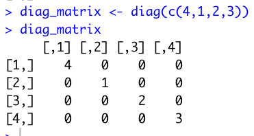
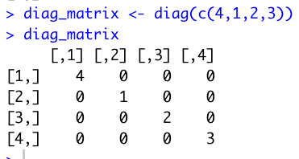
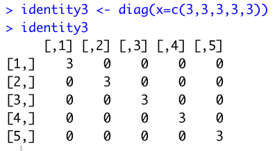
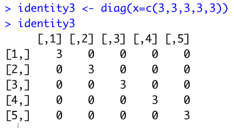
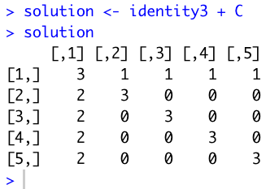
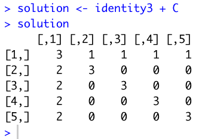

Module 06: More Matrices in R
--February 19th, 2021--
The readings this week were interesting, I enjoyed learning the overall process of creating an R package. The introduction to object-oriented programming in R with the differences
between S3 and S4 was cool as well.
This week's assignment was fairly simple, I found the diag() function in R to be very straight forward. Adding and subtracting matrices was also much easier to understand than
multiplying them.
Question 1 first required the creation of two square matrices.

 Then some simple addition and subtraction operations with the newly created matrices.
Then some simple addition and subtraction operations with the newly created matrices.
 Question 2 required the creation of a 4 column, 4 row matrix with the values 4,1,2,3 in the diagonal, using the diag() function.

Question 3 required the creation of a 5 column, 5 row matrix with 3's filling up the diagonal, 2's filling up the rest of the first column, and 1's filling up the rest of the first row.
The example provided is below:
Question 2 required the creation of a 4 column, 4 row matrix with the values 4,1,2,3 in the diagonal, using the diag() function.

Question 3 required the creation of a 5 column, 5 row matrix with 3's filling up the diagonal, 2's filling up the rest of the first column, and 1's filling up the rest of the first row.
The example provided is below:
 I first generated a 5x5 identity matrix with 3's in the diagonal using the diag() function.

I then created another 5x5 matrix, this time with zeros everywhere except the 1's and 2's required in the first row and first column.
I used matrix(c(0,2,2,2,2,1,0,0,0,0,1,0,0,0,0,1,0,0,0,0,1,0,0,0,0), ncol=5).
I first generated a 5x5 identity matrix with 3's in the diagonal using the diag() function.

I then created another 5x5 matrix, this time with zeros everywhere except the 1's and 2's required in the first row and first column.
I used matrix(c(0,2,2,2,2,1,0,0,0,0,1,0,0,0,0,1,0,0,0,0,1,0,0,0,0), ncol=5).
 Finally I added the two matrices together, getting the desired result.

Finally I added the two matrices together, getting the desired result.

As always the compiled R file can be found below, and all of the files can be found on my Github page.